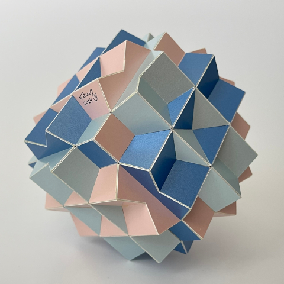

A Compound of Seven Cubes

This compound of cubes is not a fundamental one, since not all cubes can be transferred into each other through a symmetry operation. This is Skilling's Compound of 6 Cubes with one cube added according to the final symmetry. Skilling's compound consists of three pairs of cubes and the angle between the cubes in each pair can be varied without loss of symmetry. In this case the angle is chosen in such a way that when the third cube is added the angles between the three cubes (two from one pair and one extra cube) are evenly divided.
For this model I used three colours. Each pair has its own colour and the third cube is made of three colours in the classical way where one pair of parallel squares has the same colour. The radius is around 11 cm (~4.3 inches) and it was built in 2024.
This compound is similar to the classic compound of three cubes with one cube added. One can continue this process indefinitely to make a compound of 3×n+1 cubes. In each sub-compound of n-cubes the cubes share their 4-fold axes and the angle between these cubes is chosen in such a way that if you add one extra cube then the cubes are divided evenly. Now the three sets of n-cubes are put together so that the shared axis for each set is one 4-fold axis in the final compound. Then one extra cube is added according to the cube symmetry to complete it.
The case shown here is the case for n = 2, while the abovementioned classical compound of three plus one is the case for n=1. The case for n=3 would consist of a classical compound of three cubes, plus Skilling's compound, though with a different angle, plus one extra. The case for n=3 you can see here
Last Updated
2025-09-19